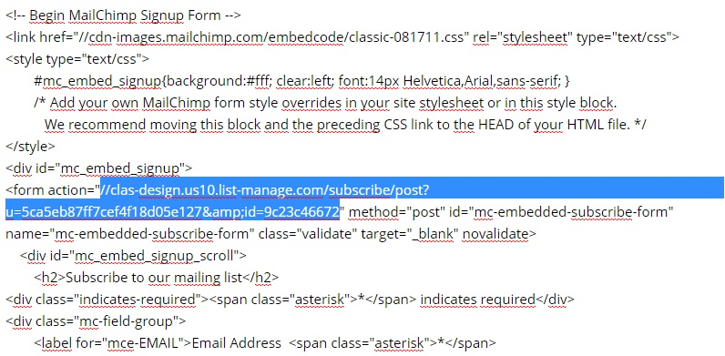

Thank you for purchasing my theme. If you have any questions that are beyond the scope of this help file, please feel free to email me to contact@clas-design.com. Thanks so much!
Instalation is pretty easy. All you need to do is unzip the file, upload the contents of the template folder to your server via FTP. You can learn more about using FTP client over here.
The template utilizes Ajax and just a bit of PHP, so if you wish to test it locally on your device you will need WAMP - for windows, or MAMP - for mac
Unzip the archive and find the folder assets. There are all the template files in this folder. You can open the following files for viewing in browser.
The css files located in the CSS directory are the ones resposible for how your theme looks - here you can control the typography, padding, positions of elements and color etc.
The js files located in the js directory are the ones responsible for javascript effects and functions.
In case if you would like to change the image for your Logo just change the path to your logo image.Since the ".logo" has its own padding and height, you may need to override some CSS depending on your image
<div class="logo"> <a href="index.html"><img src="assets/images/logo.png" alt=""></a> </div> <!-- end logo -->
These are the css files that are loaded into templates in Head page.
<!-- Bootstrap CSS Style --> <link rel="stylesheet" href="assets/css/bootstrap/bootstrap.min.css"> <!-- Template CSS Style --> <link rel="stylesheet" href="assets/css/style.css"> <!-- Animate CSS --> <link rel="stylesheet" href="assets/css/animate.css"> <!-- FontAwesome 4.3.0 Icons --> <link rel="stylesheet" href="assets/fonts/font-awesome-4.3/css/font-awesome.min.css"> <!-- Et-line Icons --> <link rel="stylesheet" href="assets/fonts/et-line-font/style.css"> <!-- BXslider CSS --> <link rel="stylesheet" href="assets/css/bxslider/jquery.bxslider.css"> <!-- Owl carousel --> <link rel="stylesheet" href="assets/css/owl.carousel/owl.carousel.css"> <link rel="stylesheet" href="assets/css/owl.carousel/owl.theme.css"> <link rel="stylesheet" href="assets/css/owl.carousel/owl.transitions.css"> <!-- Magnific-Popup CSS Style --> <link rel="stylesheet" href="assets/css/magnific-popup/magnific-popup.css"> <!-- Magnific-Popup CSS Style --> <link rel="stylesheet" href="assets/css/YTPlayer/jquery.mb.YTPlayer.min.css"> <!-- Superslides CSS Style --> <link rel="stylesheet" href="assets/css/superslides.css"> <!-- Vegas Slideshow --> <link rel="stylesheet" href="assets/css/vegas.min.css"> <!-- Morphext CSS Style --> <link rel="stylesheet" href="assets/css/morphext.css">
The fonts used are from the Google Web font library. You can change the font by editing the url provided in the HTML where marked and reflect that change in the css. To learn more and choose the perfect font for you site just head over to Google WebFonts.
<!-- Custom Google fonts --> <link href='http://fonts.googleapis.com/css?family=Raleway:400,500,300,700' rel='stylesheet' type='text/css'> <link href='http://fonts.googleapis.com/css?family=Abel' rel='stylesheet' type='text/css'>
To make animations possible we use: CSS 3 animations - http://daneden.github.io/animate.css/. Refer to the scripts website for a complete list of available animation types.
To animate an element on a page just add the .animated and .out classes to it.
The animation delay, style, speed etc. can be configured through data attributes:
data-animation - should be one of the animation names from http://daneden.github.io/animate.css/.data-animation-delay - should be a numeric value in miliseconds<div class="divelement animated out" data-animation="fadeInUp" data-delay="0">
This template uses icon fonts for delivering iconography on the website. The advantage icon fonts have over over image files ( .jpg / .png ) is that they provide scalable vector icons that can instantly be customized — size, color, drop shadow, and anything that can be done with the power of CSS.
The template comes with 2 icon fonts:
How to use FontAwesome Icons
Go to the Font awesome website ( http://fortawesome.github.io/Font-Awesome/icons/) and choose a icon and it will take you to a preview page where it provides sample code.
<iclass="fa fa-facebook"></i>
The template uses the Magnific Popup lightbox plugin.
If you want to get a link to open in the lightbox just add the .zoom class to it.
<a class="zoom" href="assets/images/portfolio/01.jpg"><img src="assets/images/portfolio/01.jpg" alt=""></a>
The template uses bxSlider and owl carousel for general sliders and carousels.
Some of sections on this template has applied parallax effect. To setup the parallax effect we use Stellar.js. It is a fully documented and easy to use plugin.
If you want an element's background image to reposition on scroll, simply add the following attribute:
<div data-stellar-background-ratio="0">
To change the background image just change the background image in CSS file(style.css) as shown below.
background: url('../images/hero-bg/background.jpg');
This section has aplied parallax efect. To setup the parallax effect we uses Stellar. It is a fully documented and easy to use plugin.
<div id="statistic-section" data-stellar-background-ratio="0">
To change the background image just change the background image in CSS file(style.css) as shown below:
#statistic-section { background: url('../images/parallax/statistic-bg.jpg') center top; }
Each column of counter is a div with the following structure:
<!-- countTo -->
<div class="col-xs-6 col-sm-3 col-md-3">
<div class="statistic-percent" data-perc="356">
<div class="fact">
<div class="stats-icon">
<span class="icon-happy"></span>
</div>
<span class="percentfactor">356</span>
<p>Happy Clients</p>
</div> <!-- end fact -->
</div> <!-- end statistic-percent -->
</div> <!-- end col-xs-6 col-sm-3 col-md-3 -->
Now to setup the counter numbers just open 'about.html' and in the "#Statistics-section" replace 'data-perc' and 'percentfactor' attribute values to number you want to show.
The Waypoint, Stellar and CountTo JavaScript must be loaded on your page.
<script type="text/javascript" src="js/jquery.stellar.min.js"></script> <script type="text/javascript" src="js/jquery.waypoints.js"></script> <script type="text/javascript" src="js/jquery.countTo.js"></script>
The structure of the filter of works looks like this:
<ul class="filter-list"> <li><a class="filter active" data-filter="*">All</a></li> <li><a class="filter" data-filter=".branding">Branding</a></li> <li><a class="filter" data-filter=".web">Web</a></li> <li><a class="filter" data-filter=".photography">Photography</a></li> </ul>
Data-filter attribute is the name of the category of the works, on the basis of which the dynamic filtering is made. More - http://isotope.metafizzy.co/filtering.html
Porfolio item
<!-- Project --> <div class="project masonry-item col-md-3 col-sm-6 col-xs-12"> <div class="project-item"> <a href="single-project.html"> <img src="assets/images/portfolio/1.jpg" alt=""> <div class="overlay"> <div class="overlay-inner"> <h3>Project Title</h3> <p>Product Design. Branding.</p> </div> <!-- End overlay-inner --> </div> <!-- End overlay --> </a> </div><!-- End project-item --> </div> <!-- End col-1-of-3 -->
<!-- Subscribe-section ================================================== --> <section> <div id="subscribe-section"> <div class="container"> <div class="row"> <div class="col-sm-6 col-sm-offset-3 col-xs-8 col-xs-offset-2"> <div class="newsletter-title text-center"> <h4>Stay informed with our newsletter</h4> </div> <!-- end newsletter-title --> <form class="form-inline subscription-form mailchimp" id="subscribeform"> <!-- Subscription messages --> <h5 class="subscription-success"></h5> <h5 class="subscription-error"></h5> <!-- Email input --> <div class="form-group newsletter-field"> <input type="email" name="email" class="form-control" id="subscriber-email" placeholder="jane.doe@example.com"> </div> <!-- Subscribe button --> <button type="submit" id="subscribe-button" class="btn btn-sm btn-dark">Subscribe</button> </form> </div> <!-- end col-sm-6 --> </div> <!-- end row --> </div> <!-- end container --> </div> <!-- end subscribe-section --> </section>
How to connect mail chimp list?
Open main.js and find following script. Just replace that mailchimp form action url with your mailchimp list url
/* ==============================================
MailChip
=============================================== */
$('.mailchimp').ajaxChimp({
callback: mailchimpCallback,
url: "http://clas-design.us10.list-manage.com/subscribe/post?u=5ca5eb87ff7cef4f18d05e127&id=9c23c46672" //Replace this with your own mailchimp post URL. Don't remove the "". Just paste the url inside "".
});
function mailchimpCallback(resp) {
if (resp.result === 'success') {
$('.subscription-success').html('<span class="icon-happy"></span><br/>' + resp.msg).fadeIn(1000);
$('.subscription-error').fadeOut(500);
} else if(resp.result === 'error') {
$('.subscription-error').html('<span class="icon-sad"></span><br/>' + resp.msg).fadeIn(1000);
$('.subscription-success').fadeOut(500);
}
}

The template has implemented AJAX contact form with entered e-mail validation. Here is an entire HTML code:
<!-- form fields --> <form action="assets/php/contact.php" method="post" name="contactform" id="contactform" class=" animated out" data-animation="fadeInUp" data-delay="0"> <fieldset> <div class="row"> <div class="col-md-6"> <div class="row"> <div class="col-sm-12"> <div class="form-group"> <input class="form-control" type="text" name="name" id="name" placeholder="Name"> </div> </div> <div class="col-sm-12"> <div class="form-group"> <input class="form-control" type="email" name="email" id="email" placeholder="Email"> </div> </div> <div class="col-sm-12"> <div class="form-group"> <input class="form-control" type="text" name="subject" id="subject" placeholder="Subject"> </div> </div> </div> </div> <div class="col-md-6"> <div class="form-group"> <textarea class="form-control" name="message" id="message" placeholder="Message..."></textarea> </div> </div> </div> </fieldset> <!-- submit button --> <div class="form-group"> <input type="submit" name="submit" value="Send message" id="submit" class="btn btn-sm btn-dark"> </div> <div id="alert"></div> </form>
To make it worked simply open a file php/contact.php (line 41) and edit there an email address then upload all the files to your server.
// Configuration option. // Enter the email address that you want to emails to be sent to. // Example $address = "joe.doe@yourdomain.com"; $address = "joe.doe@yourdomain.com";
HTML:
Within the page , an empty "div" is used as placeholder for the map. The JavaScript in the next initialises the plugin and draws the map.
<!-- Google map --> <div class="col-md-6 without-padding"> <div class="google-map"> <div class="map"></div> </div> </div>
To setup the position open file main.js and you will need to replace the latitude and longitude in the following:
var contact = {"lat":"51.51152", "lon":"-0.125198"}; //change coordinates map here
var mapContainer = $('.map');
mapContainer.gmap3({
action: 'addMarker',
marker:{
options:{
icon : new google.maps.MarkerImage('assets/images/marker.png')
}
},
latLng: [contact.lat, contact.lon],
map:{
center: [contact.lat, contact.lon],
zoom: 17
},
},
{action: 'setOptions', args:[{scrollwheel:false}]}
);
I'm using one main CSS file (style.css) This file contained general styles for whole theme. This file also contains some general styling, such as anchor tag colors, font-sizes, Keep in mind, these values might be overidden somewhere else in the file
If you would like to edit a specfic section of the site, simply find the appropiate label in the CSS file, and then scroll down until you find the appropiate style that needs to be edited.
If you need to change the color, size or font family for the main page or titles of some blocks on page, you can do this by finding and appropiate lines:
body {
font-family: 'Raleway', sans-serif;
color: #777;
line-height: 1.9;
font-size: 13px;
letter-spacing: 1.4px;
-webkit-font-smoothing: antialiased;
padding-top: 60px;
}
/***********************************************************************************************/
/* =Typography */
/***********************************************************************************************/
h1, h2, h3, h4, h5, h6, .h1, .h2, .h3, .h4, .h5, .h6 {
font-weight: 700;
color: #1f2021;
text-transform: uppercase;
}
h1, .h1, h2, .h2, h3, .h3 {
margin-top: 0;
margin-bottom: 20px;
}
h1, .h1 {
font-family: 'Abel', sans-serif;
font-weight: 300;
letter-spacing: 5px;
text-transform: uppercase;
font-size: 64px;
line-height: 1.5;
margin-bottom: 0;
}
h2 {
font-size: 24px;
line-height: 1.5;
}
h3 {
font-size: 20px;
line-height: 1.4;
}
h4 {
font-size: 16px;
padding-bottom: 20px;
line-height: 1.4;
}
h5 {
font-size: 14px;
line-height: 1.6;
}
h6 {
font-size: 12px;
}
.color {
color: #35d3b7;
}
a {
color: #d6b161;
-webkit-transition: all .25s ease-in-out;
-moz-transition: all .25s ease-in-out;
-ms-transition: all .25s ease-in-out;
-o-transition: all .25s ease-in-out;
transition: all .25s ease-in-out;
}
Several features of the theme have been implemented using JavaScript and jQuery.
To make it easier and more usable for you to work with template we have gathered all options in file main.js Each setting value is commented and only thing you need to do is just set the property needed.
Bootstrap plugins
The entire collection of Bootstrap plugins is available for you use. These have been bundled into the bootstrap.min.js file.
<script type="text/javascript" src="js/bootstrap.min.js"></script>
Smooth Scrolling
This is used for the navigation links, to allow for smooth scrolling to sections on the page. You can alter the easing and scrolling speed.
$('a[href*=#]:not([href=#])').click(function() {
if (location.pathname.replace(/^//,'') == this.pathname.replace(/^//,'') && location.hostname == this.hostname) {
var target = $(this.hash);
target = target.length ? target : $('[name=' + this.hash.slice(1) +']');
if (target.length) {
$('html,body').animate({
scrollTop: target.offset().top -50
}, 1000, 'easeInSine' );
return false;
}
}
});
FitVids
This is a lightweight, easy-to-use jQuery plugin for fluid width video embeds. It is a fully documented and easy to use plugin.
$(".project-video, .video-creative, .video-post").fitVids();
Magnific-popup
This plugin is used for lightbox effect on screenshot section It is a fully documented and easy to use plugin.
// Example with multiple objects
$('.zoom').magnificPopup({
type: 'image',
gallery: {
enabled: true
}
});
$('.video-pop-up').magnificPopup({
type: 'iframe',
});
OWL Carousel
$(".related-carousel").owlCarousel({
autoPlay: 3000, //Set AutoPlay to 3 seconds
items : 4,
itemsDesktop : [1199,3], //number of items displayed on resolution less then 1199px
itemsDesktopSmall : [979,3] //number of items displayed on resolution less then 979px
});
This template are designed to work winth Internet Explorer versions 9+, Safari (Mac+iOs), Firefox (Mac+Windows), Chrome (Mac/Windows/Android/iOS)
Specific CSS3 features may not render perfectly in Internet Explorer 9 because its lack of full CSS3 support.
This theme is fully responsive and compatible with all major devices:
All the photos used in this template are intended only to illustrate the template and all the rights on them belong to their legal owners.
Images:
The images used in this template is for demo only. If you want to use any of the image seen in this demo, be sure to check their usage guidelines before you use them for commercial or personal purposes.
JS plugins and third party CSS used in this template:
Once again, thank you so much for purchasing this theme. As noted at the begining, we'd be glad to help you if you have any questions relating this themes.